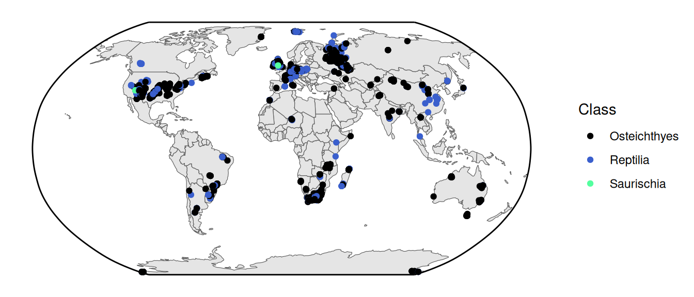

library(palaeoverse)
library(ggplot2)
library(deeptime)Spatial Data Visualization Practical
In this practical we’ll be visualizing spatial data. First, let’s load some packages that we’ve learned about from the previous practicals:
Plotting vector spatial data
Now, for plotting vector (points, lines, polygons) spatial data, we’ll need the sf package. We’ll also use the rnaturalearth package to get a map of the world. We’ll need something to visualize, so let’s also grab the tetrapod occurrence data from the palaeoverse package.
library(sf)
library(rnaturalearth)
# Get a map of the world
world <- ne_countries()
# Get tetrapod occurrence data from palaeoverse
data(tetrapods)
# Roughly calculate medium ages
tetrapods$mid_age <- (tetrapods$max_ma + tetrapods$min_ma)/2We need to convert our occurrences to an sf object, so we’ll use the convenient st_as_sf() function. This can be used to convert any sort of coordinate data (points, lines, polygons) to sf objects. In other cases, like with the rnaturalearth package, the data may already be in the sf format. Once you have an sf object, it’s fairly simple to plot it with ggplot using geom_sf().
# Convert the occurrence coordinates to an "sf" object
tetrapods_sf <- st_as_sf(tetrapods, coords = c("lng", "lat"),
crs = "+proj=longlat +datum=WGS84 +no_defs")
ggplot() +
geom_sf(data = world) +
geom_sf(data = tetrapods_sf, color = "maroon", shape = 3) +
theme_classic()We can color the occurrences based on the period they formed during. First we just add a new column to our existing sf object (which also doubles as a data.frame object). Then we use this column as an aesthetic in our ggplot call, just like we learned about in the previous practical.
tetrapods_sf$period <- cut(tetrapods_sf$mid_age,
breaks = c(periods$max_age, 0),
labels = periods$name)
ggplot() +
geom_sf(data = world) +
geom_sf(data = tetrapods_sf, aes(color = period), shape = 3) +
scale_color_geo(name = "Period", dat = "periods") +
theme_classic()Pretty cool! Now on to some more complex topics…
Projections
When you plot latitude and longitude as y and x coordinates, respectively, this is called the geographical projection. However, this is a heavily distorted view of the Earth. Here, we’ll learn how to plot our spatial graphs in with a more appropriate projection (or “coordinate system”). Documentation for many different projections is available on the EPSG website. In this example, we’ll use the Robinson projection (i.e., “ESRI:54030”). Note that this projection still isn’t perfect. For example, distortion close to the poles is severe. However, due to the curvature of the meridians, distortion declines to moderate levels moving away from the poles. In order to change the overall projection of your ggplot plot, you simply use the coord_sf() function. Since the plot is no longer a rectangle, we also make our own bounding box to place on top of the plot.
# Set up a bounding box
bbox <- st_graticule(crs = st_crs("ESRI:54030"),
lat = c(-89.9, 89.9), lon = c(-179.9, 179.9))
ggplot() +
geom_sf(data = world) +
geom_sf(data = tetrapods_sf, aes(color = period), shape = 3) +
geom_sf(data = bbox) +
coord_sf(crs = st_crs("ESRI:54030")) +
scale_color_geo(name = "Period", dat = "periods") +
theme_classic()Both visually appealing and more geographically accurate, nice! Let’s use this projection (and bounding box) for most of our future spatial plots.
Organismal silhouettes
We could also color the points based on taxonomy. For example, here they are colored by the Class of the fossil occurrence:
ggplot() +
geom_sf(data = world) +
geom_sf(data = tetrapods_sf, aes(color = class)) +
geom_sf(data = bbox) +
coord_sf(crs = st_crs("ESRI:54030")) +
scale_color_manual(values = c("black", "royalblue3", "seagreen1"),
name = "Class") +
theme_classic()
That looks nice! However, one concern might be that people don’t know what those taxonomic names refer to. Instead (or in addition to the taxonomy), we could use organism silhouettes for the points using the rphylopic package. Note that this might take a while to render because of all of the individual silhouettes.
library(rphylopic)
# Remove duplicates
tetrapods_unique <- unique(tetrapods[, c("class", "lat", "lng")])
ggplot() +
geom_sf(data = world) +
geom_phylopic(data = tetrapods_unique,
aes(x = lng, y = lat, name = class, color = class),
size = 4E5, alpha = 0.75, show.legend = TRUE,
key_glyph = phylopic_key_glyph(name = c("Osteichthyes",
"Reptilia",
"Saurischia"))) +
geom_sf(data = bbox) +
coord_sf(crs = st_crs("ESRI:54030"), default_crs = st_crs(4326)) +
scale_color_manual(name = "Class",
values = c("black", "royalblue3", "seagreen1"),
guide = guide_legend(override.aes = list(size = 1,
alpha = 1))) +
theme_void()Well, in hindsight this might not be much better with all of the overlap…I’ll leave it to you to decide how to best display this information.
Spatial summaries
There are also lots of functions available in the sf package to perform spatial summaries. Let’s go ahead and calculate the number of fossil occurrences in this dataset that have been found within each country across the world. First we find the intersection of the two spatial objects (st_intersection()), which identifies which country each occurrence is in. Then we tabulate the number of occurrences per country (table()). Then we can go ahead and plot the results as a bar plot.
sf_use_s2(FALSE)
# It takes a little of time
fos_over_country <- st_intersection(x = world, y = tetrapods_sf)
fos_per_country <- as.data.frame(sort(table(fos_over_country$sovereignt)))
head(fos_per_country) Var1 Freq
1 Chile 1
2 Ethiopia 1
3 Japan 1
4 Mozambique 1
5 Pakistan 1
6 Somalia 1# Plot with ggplot
ggplot(fos_per_country, aes(x = Freq, y = Var1)) +
geom_col() +
scale_x_continuous(name = "# of Occurrences") +
scale_y_discrete(name = NULL) +
theme_classic()The cool thing about spatial plots with ggplot2 is that you can use other aesthetics like color, fill, etc. just like you would with other types of plots. Let’s go ahead and combine our occurrence counts with our country spatial data, then plot the counts as the fill color of the countries.
# Combine the fossil counts with the `world` spatial data
world$n_fossils <- fos_per_country$Freq[match(world$sovereignt, fos_per_country$Var1)]
# Fill in the countries just like you would in any other plot
ggplot() +
geom_sf(data = world, aes(fill = n_fossils)) +
geom_sf(data = bbox) +
coord_sf(crs = st_crs("ESRI:54030")) +
scale_fill_viridis_c(name = "# of Fossil\nOccurrences") +
theme_classic()Plotting raster spatial data
Now we’ll learn how to handle and plot raster (pixel) spatial data. First we’ll need to load the terra and tidyterra packages. These packages include lots of functions for handling and summarizing raster data (terra) and plotting it with ggplot2 (tidyterra). We’ll also load the rpaleoclim package which allows us to access paleo-environmental data from the paleoclim website.
library(terra)
library(tidyterra)
library(rpaleoclim)Let’s use environmental data from the last glacial maximum (LGM, ~21,000 years ago). We’ll first preview what the temperature and precipitation maps look like. We’ll use the autoplot() function from tidyterra to plot these two environmental variables of interest.
# Get climate variables for last glacial maximum
Pclim_lgm <- paleoclim(period = "lgm", resolution = "10m")
# Plot temperature (the original values are ºC*10)
autoplot(Pclim_lgm$bio_1/10)
# Plot precipitation in mm/year
autoplot(Pclim_lgm$bio_12)The autoplot() function acts as a wrapper for ggplot() and tidyterra::geom_spatraster(). You can also use those functions individually and add additional ggplot2 commands to make a customized figure:
ggplot() +
geom_spatraster(data = Pclim_lgm$bio_1/10) +
geom_sf(data = tetrapods_sf) +
geom_sf(data = bbox) +
coord_sf(crs = st_crs("ESRI:54030")) +
scale_fill_viridis_c(name = "Temperature (ºC)", na.value = "white") +
theme_classic()Combining plots
Let’s take this moment to learn how to combine different plots into a single figure. For this example we’ll use the ggarrange2() function from deeptime; however, there are many other options, including the cowplot and patchwork packages.
# Convert temperature data to sf
gg1 <- ggplot() +
geom_spatraster(data = Pclim_lgm$bio_1/10) +
geom_sf(data = tetrapods_sf, aes(color = as.factor(class))) +
geom_sf(data = bbox) +
coord_sf(crs = st_crs("ESRI:54030")) +
scale_fill_viridis_c(name = "Temperature (ºC)", option = "magma",
na.value = "white") +
scale_color_manual(values = c("black", "royalblue3", "seagreen1"),
name = "Class") +
theme_classic() +
theme(legend.box = "horizontal")
gg2 <- ggplot() +
geom_spatraster(data = Pclim_lgm$bio_12) +
geom_sf(data = tetrapods_sf, aes(color = as.factor(diet))) +
geom_sf(data = bbox) +
coord_sf(crs = st_crs("ESRI:54030")) +
scale_fill_viridis_c(name = "Precipitation (mm/yr)",
na.value = "white") +
scale_color_manual(values = c("slateblue1", "red4","maroon2","yellow2"),
name = "Diet") +
theme_classic() +
theme(legend.box = "horizontal")
ggarrange2(gg1, gg2, ncol = 1)Note that these functions for combining plots work for any kinds of ggplot2 plots, not just spatial ones.
Paleomaps
Finally, as paleontologists, we are often interested in the paleocoordinates of fossils. In order to visualize these, we’ll first need to estimate the paleocoordinates of our fossils. As you’ve already learned, we can use the palaeorotate() function to achieve this. For time’s sake, we’ll only look at Early Permian occurrences.
tetrapods_subset <- tetrapods[tetrapods$mid_age == 285.7, ]
tetrapods_GOLONKA <- palaeorotate(tetrapods_subset, age = "mid_age",
method = "point", model = "GOLONKA")
tetrapods_GOLONKA_sf <- st_as_sf(tetrapods_GOLONKA,
coords = c("p_lng", "p_lat"),
crs = "+proj=longlat +datum=WGS84 +no_defs")
nrow(tetrapods_GOLONKA_sf)[1] 15Looks like we only have 15 occurrences from this interval. Next, we can use the reconstruct() function from the rgplates package to retrieve a paleomap of the continents during the Early Permian. We can combine these two sets of data to generate a beautiful map:
library(rgplates)
plates <- reconstruct("coastlines", age = 285.7, model = "GOLONKA")
ggplot() +
geom_sf(data = plates, fill = "azure4", color = NA) +
geom_sf(data = tetrapods_GOLONKA_sf, color = "red") +
geom_sf(data = bbox) +
coord_sf(crs = st_crs("ESRI:54030")) +
theme_classic()As you can see, our 15 Early Permian occurrences are from only two sites, both fairly close to each other. Regardless, that’s a pretty nice plot! We’ll leave it to you to make plots for other time intervals!